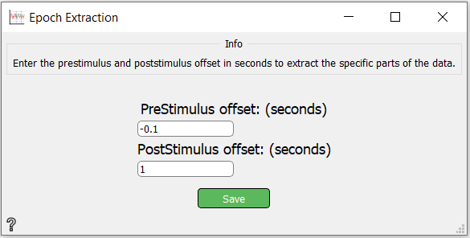

Epoch Extraction
Extracts specified epochs from the EEG data.
Inputs
Outputs
- Epochs: Extracted Epochs
Use

- Markers - If markers are added, extracted Epochs will be only Epochs with event-ID of added markers-ID.
- PreStimulus offset - Start time before event.
- PostStimulus offset - End time after event.